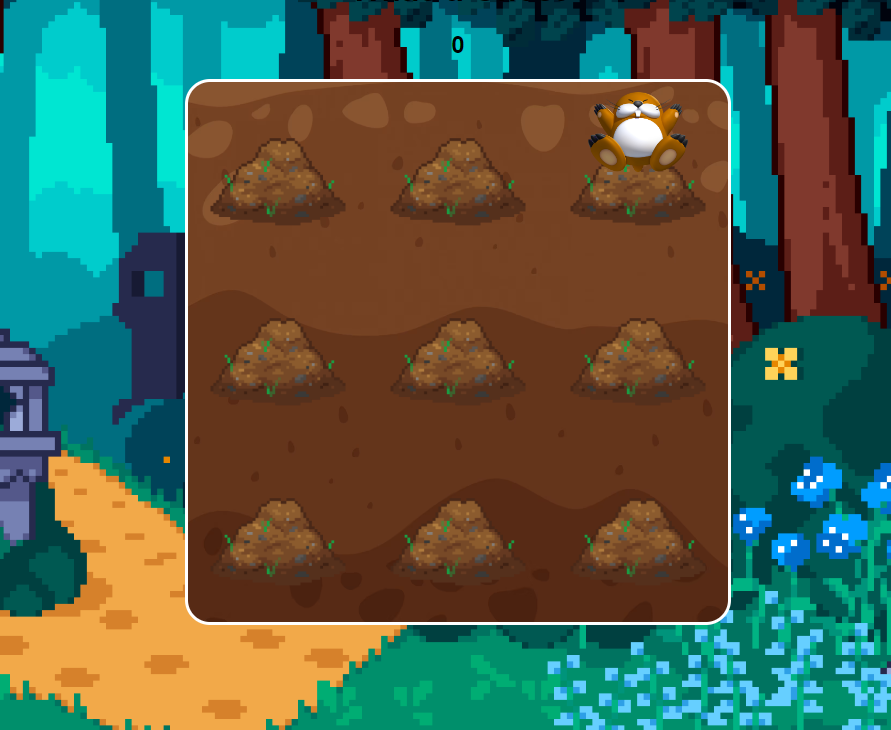
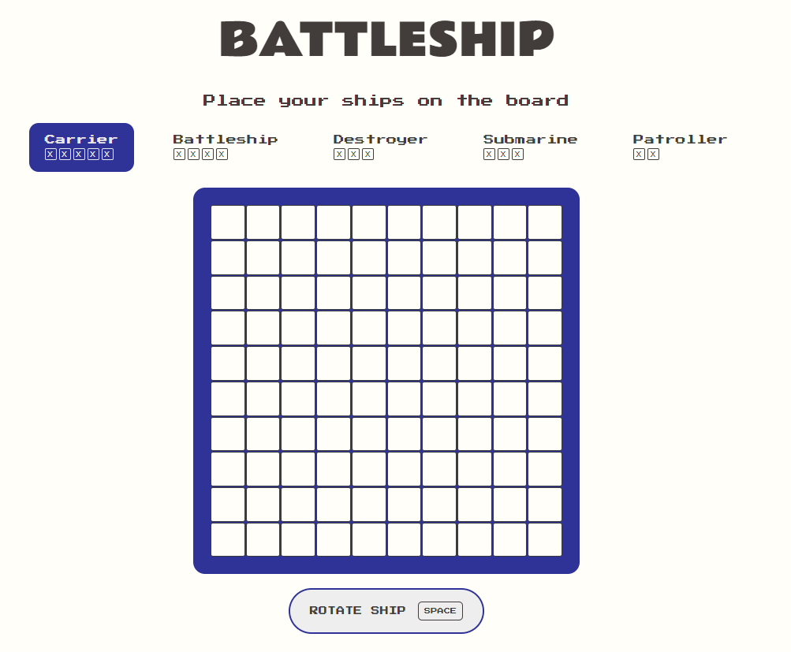

Boter-kaas-en-eieren wordt gespeeld op een veld van 3 bij 3, speler 1 moet een kruis tekenen, en speler 2 een bolletje. De speler die drie tekens op een rij heeft, wint.

Wack-a-Mole is een klassiek arcadespel waar spelers snel reageren om opduikende mollen te slaan met een hamer voordat ze verdwijnen. Het test reflexen en hand-oog coördinatie.
